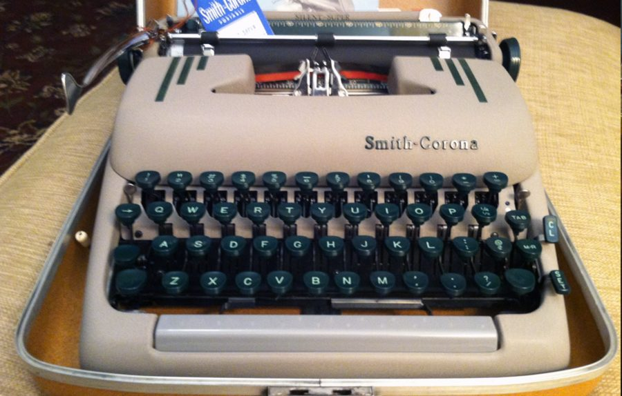

读之前
这一页是报告 12：6 月 5 日、6 日、8 日三条，和报告 11 的最后一条隔了十来天。查理已经不在面包店上班，有十来天没写报告。条数少，每条都长。读的时候抓两条线：一条是查理和身边的人说话越来越难，留意每个人嘴上说的和心里怕的；一条是回忆和眼前的事越贴越近，留意是眼前的什么把旧事勾出来的。
手术两个多月。5 月 20 日被唐纳面包店辞退：同事联名要他走，只有 Fanny 没签，十七年就此结束。他爱 Alice Kinnian，可一靠近她就耳鸣、发冷、惊慌，Strauss 说他感情上还是个少年。他一秒钟读完一页书，和大学教授们说不到一块。Nemur 拿他和刀子比，他抗议「我是一个人」。Nemur 已经定了要在芝加哥的大会上发表这项研究。
读的时候带着这几个问题。不用先找答案，读完回来对照「检查一下理解」。
查理说他现在能闭上眼「伸手去够」记忆。和前几篇回忆自己冒出来的样子比，变了什么？§1
回忆里那一幕，每个人替谁说话？查理自己站在哪儿？§1
留意查理在 6 月 6 日这一条里怎么替别人说出他们心里的想法，对方怎么回他。§2
查理夜里出门，自己问自己在找什么。读完替他答一答。§3
分节地图
这一页有三条带日期的报告。读完一条打个勾；每条下面的英文是那一条开头的几个词，在 Kindle 里搜它就能跳过去。没读的那几行先模糊着，免得提前看到情节，点一下就能看清。全页约 5100 词，一次坐下读得完。
6 月 5 日约 1600 词 Nemur is upset because I haven’t … 先是工作和噩梦，后半一大段回忆换成现在时。留意每个人替谁说话。 6 月 6 日约 1900 词 My first real quarrel with Alice … 回到一个熟地方。留意每个人说话时在怕什么，包括查理自己。 6 月 8 日约 1600 词 What drives me out of the … 留意他一路上在试探自己什么，每走一步在等什么。
背景：书里默认你知道的事
按在书里出现的顺序排，标题前是节号。人名后面括号里是中译本的译名，读者想对照译本时用。
§1 打字机和「每分钟七十五个词」那时候要把字写得又快又整齐，靠打字机：敲一个键，字锤隔着色带把字母打在纸上；手动的打字机打完一行要扳一下把手，把滑架推回行首。会打字是秘书、记者的看家本领。英文打字的速度按每分钟多少词（words per minute）算，通常五个字符算一个词；职业打字员一般在每分钟 50 到 80 词之间。

Smith-Corona 的 Silent-Super 便携打字机，1953 到 1959 年是这家公司最好的便携型号，这一台造于 1958 年。书里没说查理用的是什么打字机，这张图与本书无关。P. Musgrave，CC BY-SA 3.0，维基共享资源 §1 查理家里的人§1 会回到查理小时候的家。父母的名字他到报告 10 才想起来。下面几张卡片只写你此刻已经知道的。
Rose 罗丝 母亲。报告 10 里她坚持查理「正常」，逼他学，动不动就打；报告 11 里她因为他看女孩的样子拿皮带抽他。
Matt Gordon 马特 父亲。常拦着 Rose：报告 8 里他因为 Norma 挖苦查理打了她一耳光，报告 11 里他拉住拿皮带的 Rose。
Norma 诺尔玛 妹妹，查理六岁那年出生。如今和母亲住在布鲁克林，查理的手术是她同意的（报告 5）。
Uncle Herman 赫尔曼叔叔 十七年前把查理领进唐纳面包店，两年后去世（报告 8）。
Matt（父亲）
常拦着 Rose，护着查理
Rose（母亲）
坚持他「正常」，打骂很凶
查理
三十出头
Norma（妹妹）
小他约六岁，和母亲住布鲁克林
Uncle Herman
带他进面包店，两年后去世
虚线：书里没说是哪一边的亲戚
本站示意图：读到报告 11 为止知道的查理一家。只画到这里为止书里交代过的事。 §1 拿破仑、大富翁、跳棋§1 的对话里提到三样东西。拿破仑 1815 年 6 月在滑铁卢（今比利时境内）战败。Monopoly（大富翁）是 1935 年起由 Parker Brothers 公司发行的棋盘游戏，掷骰子走格子，买地、盖房、收租。checkers 是西洋跳棋，见词条。
§2 成人班：Beekman 的智障成人中心就是查理手术前晚上跟 Miss Kinnian 上课的地方：报告 3 里他叫它 Beekman 的智障成人学校，报告 8 里说是 Beekman 学院的成人中心。§2 交代了它在哪：第二十三街、第五大道以东的一所旧校舍。Beekman 和这个中心都是书里虚构的；地段是真的，第二十三街和第五大道的路口就是麦迪逊广场公园（Madison Square Park）的西南角。§2 还会提到 Warren 之家的「外出工作」安排：报告 8 里 Donner 就是这样把查理从 Warren 保出来做工的。
§2 moron：当时的叫法moron 是美国心理学家戈达德（Henry H. Goddard）1910 年造的词，取自希腊文「迟钝、愚蠢」。在当时的分级里，它指智商约 51 到 70 的人，再往下还有 imbecile、idiot 两级。查理手术前测出 68，按这套叫法就在这一级。这个词后来成了骂人话，专业上早就不用了；今天说「智力障碍」（intellectual disability）。书里查理自己也用这个词。
§3 中央公园中央公园（Central Park）在曼哈顿中部，南北约四公里。南边界是第五十九街，这一段街叫 Central Park South；东边界是第五大道，两条街的路口在公园东南角。园里有好几处湖和池塘、许多座小桥，地面上到处露着大块的岩石。书里只说「湖」，没说是哪一处。
今天从 Gapstow 桥上往南看中央公园的池塘（The Pond）。左边是露出地面的岩石；远处的楼是今天的样子，和查理那时不同。Dough4872，CC BY-SA 4.0，维基共享资源
§3 弗吉尼亚的纽波特纽斯Newport News，弗吉尼亚州东南部的港口城市，以造船出名：那里的纽波特纽斯造船厂创办于 1886 年。§3 提到这个地名。
词与短语
三类：紫边的「查理拼的」是他拼错的词，先写还原的拼法；黄边的「每个字都认识」是熟词生义、俚语、别人话里的弦外之音；其余是这里用法特别的词。斜体小字是原句里的几个词，在 Kindle 里搜它就能找到原文，拼错的照拼错的抄。
§1 6 月 5 日
turn in
… I haven’t turned in any progress …
交（报告、作业）
turn in 还可以是「上床睡觉」「告发」。这里是交上去。
grant
… salary out of the grant so …
（研究项目的）拨款，经费
作动词是「准予」，作名词常指基金会或政府拨给研究的钱。这笔钱来自报告 8 里提过的 Welberg 基金会（书里虚构）。
prime exhibit
… are the prime exhibits for his …
最主要的展品
exhibit 是展览会上的展品，也是法庭上的证物。查理把自己和 Algernon 并列，下一段就说他讨厌 Nemur 把他当实验标本。
the other side of the fence
… on the other side of the intellectual …
篱笆的另一边，对面的立场
on the other side of the fence 是「换到了另一方」。从前是别人要把话说简单给他听，现在轮到 Strauss 要他把话说简单给别人听。
platonic
… Our relationship remains platonic. But …
柏拉图式的，不涉及性的
来自柏拉图谈爱的对话，日常英语里指没有肉体关系的感情。
for three nights … there were the nightmares
… But for three nights after I …
（离开面包店后）一连三个晚上都做噩梦
there were the nightmares 是「噩梦就来了」，说的是那三夜。译本：「只有三个晚上没有做噩梦」。意思弄反了：原文是那三夜做了噩梦，下一段就是梦的内容。
charged with
… the air becomes charged with laughter …
（空气里）充满了
charged 本义是「充了电的」。the air is charged with … 常说紧张、兴奋，这里是笑声。
cupid
… the two cupids wave their flaming …
小爱神丘比特
婚礼蛋糕上的装饰。报告 11 里 Fanny 低头装饰的，就是一个上面有新郎新娘的结婚蛋糕。
untapped faculties
… all of the untapped faculties of …
还没开发的心智能力
faculty 常见的意思是「院系、全体教员」，这里是「（心智的）官能、能力」。untapped 本指没开过的酒桶、没开采的资源。
paper
… was the best paper in the whole …
考卷
在学校里，paper 是试卷、作业、论文。前一句 Norma 挥着的 a paper 也是这张考卷。
coiled in a crown
… coiled about her head in a …
（辫子）盘在头上像一顶王冠
把长辫绕头一圈盘起来的发式。
blurt out
… news, blurts it out before she …
脱口说出
mark
… It’s my mark, and I’m …
分数
这里是考试的分数。§2 还有一个 easy mark，意思完全不同。
young lady
… “Now wait a minute, young lady.” …
（训孩子时）你这丫头
父母这样叫自己的女儿，往往是要训话了：字面客气，口气是严厉的。这一幕里 Matt 叫了好几次。
checkers
… can’t play Monopoly or checkers or …
西洋跳棋
美国叫 checkers，英国叫 draughts：棋子在深色格子里斜着走，跳过对方的子就吃掉它。不是国际象棋（chess），也不是中国跳棋。Monopoly 见「背景」。
go back on
… Are you going back on what …
说话不算数，食言
button at the end of a string
… his large red button at the …
拴在绳子一头的大红纽扣
可以对照报告 10：六岁的查理玩的是穿在绳子上、一转就闪的珠子和圈（spinner）。
That settles it
… “That settles it,” says Matt picking …
那就这么定了
settle 是「了结、解决」。说这句话的人认为事情已经没什么可争的了。
dummy
… I’ll be a dummy like him.
笨蛋，傻子
本义是假人、橱窗模特，和 dumb（哑、笨）同源。报告 10 里 Rose 说过 He’s not a dummy.
take in
… just a boy we took in …
收留（无家可归的人）
take in 还可以是「欺骗」「理解吸收」「把衣服改小」。这里是把别人家的孩子领回来养。
throw it back into her face
… throw it back into her face.
甩回到她脸上
习语 throw something back in someone’s face 是「拿对方的话或好意反过来刺对方」。查理在这里用的是字面意思，对着前面那一幕。
§2 6 月 6 日
pick someone up
… to the Center to pick her …
接（人）
也有「在路上搭讪、勾搭」的意思，这一页后面还会碰到这个用法。
Extension
… says C. R. A. Beekman Extension.
（大学的）推广部，进修部
大学给校外的人开课的部门叫 extension。C. R. A. 是 Center for Retarded Adults 的缩写。译本：「比克曼进修部」。门牌上的 C. R. A. 没有译出来，牌子上原本写着这是给智障成人的地方。
count change
… learned to count change of a dollar.
数零钱
change 在这里是「零钱」，不是「改变」。查理在成人班学过怎么数一块钱的零钱。
get up the nerve
… Finally, I got up the nerve …
鼓起勇气
nerve 在这里是「胆量」，不是神经。
hysterectomy
… arranged for a hysterectomy. She wasn’t …
子宫切除术
切除子宫以后不能再怀孕。这件事的时代背景见读后的「对照今天」。
easy mark
… been an easy mark for dozens …
容易得手的对象，好骗的人
mark 在骗子的行话里是「下手的目标」。和 §1 Norma 的 mark（分数）不是一回事。
outside work trainee
… approved for outside work trainees by …
（从收容机构）出去做工的受训学员
报告 8 里 Donner 说，他当年就是让 Warren 之家把查理放出来做工（outside work placement）。
big shot
… “He talks like a big shot …
大人物（带讽刺）
报告 11 里 Frank 也用这个词骂过他。
alma mater
… the old classroom. My alma mater. …
母校
拉丁文，本义「哺育的母亲」，一般指自己念过的大学。查理拿它称呼成人班的教室，是自嘲。译本：「我突然对老同学的状况好奇」。原文是对那间旧教室（the old classroom）好奇，下一句他也只是想从窗口往里看看。
out of proportion
… is all out of proportion to …
和……不相称，过了头
查理的意思是：你的火气比发生的事大得多。
lick the foot that kicks me
… licking the foot that kicks me?
去舔踢我的那只脚
接着前半句 docile pup, wagging my tail 的狗的比方：挨了踢还去舔踢它的脚。读着像把习语 bite the hand that feeds you（咬喂你的手，忘恩负义）倒过来说。
take crap
… take the kind of crap that …
忍受窝囊气
take 在这里是「忍受」；crap 是粗话，指烂事、废话。
patronizing
… been smug and patronizing—using me …
居高临下、以恩人自居的
patron 是「赞助人、主顾」，patronize 常见的意思是「光顾」；形容人的态度时是「屈尊俯就，把对方当小孩」。
moron
… feel intelligent beside a moron.
「低能者」（当时的叫法，后来成了骂人话）
见「背景」。
take it the wrong way
… going to take it the wrong …
误会（话里的意思）
kick oneself
… I feel like kicking myself because …
懊悔得直想踢自己
口语，「后悔、恨自己没做好」，不是真踢。
neo-Boulean mathematics
… cultural variants, and neo-Boulean mathematics, and …
「新布尔数学」
书里拼作 Boulean；常见的拼法是 Boolean，来自英国数学家布尔（George Boole）的逻辑代数。它和后面的 post-symbolic logic（后符号逻辑）都不是常见的学科名，在这里是 Alice 举出来的、她听不懂的那一类东西。
sit in on
… the lectures I’ve sat in on …
旁听
不是正式选课，只是坐进去听。
dawn on
… the enormity of it dawned on …
（某人）开始明白过来
dawn 是「破晓」，dawn on someone 是「渐渐意识到」。enormity 严格说指「（罪行的）极其严重」，口语里也当「巨大」用。
the ice had broken
… The ice had broken between us …
（我们之间的）冰面裂开了
不是 break the ice（打破僵局、开始热络）。后半句是裂缝越来越宽、水流把他带向大海：冰面裂开，各自漂远。
trial
… You’re going through a great trial.
考验，磨难
不是审判。
be in the way
… I don’t want to be in the way
碍事
hang on to
… I’ll hang on to my splintering ego …
守住，抓着不放
ego 在日常英语里是「自尊、自我感觉」，splintering 是正在裂成碎片。句末那个 thank you 是带刺的客气。
take liberties with
… You take liberties with other people’s …
（对别人的事）擅自做主，不知分寸
这里是说他随便替别人的心思下结论。
create a scene
… to create a scene, to bang …
当众大闹一场
cut adrift
… on my own, and cut adrift.
缆绳被割断、随水漂走
船的说法。和前面的 current、open sea 是同一路比方。
settle down
… marry, have children, settle down.
安定下来，成家过日子
§3 6 月 8 日
prowl
… out of the apartment to prowl …
四处游荡、转悠
本指野兽四处觅食，用在人身上常带点不怀好意的味道。
elopement
… her elopement with the sailor.
私奔
be with (a man)
… I’ve been with other men. …
和（男人）睡过
委婉说法，不是「和……在一起待过」。
kept me moving ahead
… Something kept me moving ahead to …
让我一直往前走
keep someone doing 是「让某人一直做下去」。这一段用的是试探脚下的比方：每走一步都在等地面塌下去。译本：「某种东西阻止我继续试探」。意思反了：原文是有什么推着他往前走。
bother you about luggage
… they don’t bother you about luggage …
不追问你行李的事
意思是：先把房钱付了，没带行李也没人多问。她说的是一家不贵、也不多问的旅馆。
been around
… woman who had been around.
见过世面的（尤指男女之事上有经验）
译本：「她是那种原本就存在的女人」。是照 been around 字面上的在、存在来译的；这里说的是她在男女之事上有经验。
Only the fifth month
… “Only the fifth month,” she said. …
才五个月（身孕）
没说 pregnant 这个词，靠 month 和她敞开的外套让人明白。
double exposure
… superimposed as a double exposure on …
双重曝光
胶片相机没过片，同一格拍了两次，两个画面叠在一起。这一条里查理两次用到这个比方。
blasphemer
… as a blasphemer waits for lightning.
亵渎神明的人
整句是「像渎神的人等着雷劈」：知道自己犯了忌，等着惩罚落下来。
heavy with
… my mother, heavy with my sister, …
怀着（孩子）
heavy with child 是老派的「怀孕」说法。
double back
… near the playground, I doubled back, …
往回折返
outcropping
… the huge outcropping of a rock …
露出地面的岩石
见「背景」里中央公园的照片。
never a cop when you need one
… There’s never a cop when you …
要用警察的时候总找不着
常见的抱怨句式 There’s never a … when you need one。
degenerate
… “A degenerate tried to rape her.” …
下流坯，变态
报告 9 里 Harriet 的哥哥骂十一岁的查理，用的也是这个词。
flush out
… the shouting had flushed out the …
把（藏着的人）惊出来
打猎用语：把鸟兽从草丛里轰出来。
night crawler
… flushed out the night crawlers because …
夜里在公园出没的人
night crawler 本义是夜里爬出地面的大蚯蚓，常拿来做鱼饵。查理拿它比夜里在公园里游荡的人。
查理的文字
这一页有个变化曲线上看不出来：查理说手写太慢，跟不上脑子，学了打字，一分钟能打七十五个词，写下来容易多了。拼错率是零或接近零。真正拼得不标准的只有回忆里 Matt 说的 musn’t（一般写作 mustn’t），书里没说是不是有意的。标点数 6 月 6 日最高：吵架时话说到一半被打断、自己收住，破折号比另外两条多一倍多，逗号也多。长词比报告 11 的 5 月 15 日少得多，因为这一页大半是对话。
留意 §1 的回忆怎么写：从窗户变成镜子那一刻起，换成了现在时和「他」，像在看一场戏；The scene fades 之后回到过去时和「我」；最后一段，三十出头的查理隔着这些年对妹妹说话。§2 快到结尾的地方有一句只有两个词的 Suddenly free.，没有主语也没有动词。译本：「感受夏夜的徐徐凉风拂过脸颊」。接在这一句后面的 Suddenly free. 没有译出来。
记忆拼图
查理的童年是一段一段想起来的。每段一张卡片：想起了什么，是被眼前的什么勾起来的。年纪是从书里推的，推不出来的写「年纪不详」。读过的页的卡片会汇总到记忆拼图 ，按年纪排好。
考卷和狗 十四五岁，在门廊上等妹妹放学。Norma 历史考了 A，要父母兑现养狗的话。查理说要帮她喂狗，她尖叫说狗只能是她一个人的，Matt 就说不养了。她把考卷撕碎扔到他脸上。他吓得尿了裤子，等着挨打。是他闭眼去够面包店的窗户、窗户变成镜子时勾出来的。
§1 「他不是我的亲哥哥」 那以后 Norma 总关着房门，没她的允许查理不能进。有一次他听见她对一个女伴说，他是家里可怜他才收留的孩子，妈妈说这话可以跟大家讲了。接着上一段回忆想起来的。
§1 怀着妹妹的母亲 Norma 出生前，母亲大着肚子，抱他、哄他越来越少，有人说他不正常时也不大护着他了。是中央公园里那个女人裹紧外套、护着肚子的动作勾出来的。前一个叠上来的画面，是报告 11 里想起的那个拉开浴袍的中年女人。
§3
三十出头 6 月的现在
6/5 窗户变成镜子
6/8 公园里敞开的外套
14 岁 十四五岁 6 岁 不详 考卷和狗
「不是亲哥哥」（在这以后）
拉开外套 → 浴袍女人（报告 11）
裹紧外套 → 怀孕的母亲
本站示意图：这一页的现在（上面的线）和查理想起的年纪。6 月 8 日一个女人的两个动作，叠上了两个旧画面。 值得停下来的句子
Ironic to find myself on the other side of the intellectual fence.— §1，6 月 5 日，Strauss 又一次提醒他说话、写字要简单直接。本站译：讽刺的是，我发现自己到了智力这道篱笆的另一边。
句子没有主语和谓语，开头省掉了 It is，像记在本子上的一行笔记。三个月前，是别人对查理说话要放慢（报告 2 里他说 Burt 讲话慢，像 Miss Kinnian 在班上那样）；现在轮到他被提醒：语言有时是一道墙，不是一条路。这句话在 §1 只是一句自嘲，到了 §2，Alice 会把篱笆这一边的滋味说给他听。
I am just as far away from Alice with an I.Q. of 185 as I was when I had an I.Q. of 70.— §2，6 月 6 日这一条的最后。本站译：智商 185 的我和 Alice 之间的距离，跟我智商 70 的时候一样远。
这是读者第一次看到 185 这个数字，它出现在一句讲距离的话里，而不是讲成就的话里。70 是他报告 9 里自己说的手术前的分数。下一句是 And this time we both know it.：上一次，隔着这段距离的人只有一方看得见。
读完想一想
1. Alice 说查理从前有一种让人愿意亲近的暖和坦率，现在没了；查理说他再也不用忍受别人塞给他的东西。你站在谁那一边？两个人说的能同时成立吗？
本站的看法 本站觉得两个人都说中了一半。查理说得有道理：从前有些人对他好，是拿他来衬托自己。Alice 也说得对：他现在对人不耐烦，替别人下结论，连她心里怎么想都要替她说。书里让查理自己在这一条里承认，他只顾着自己身上发生的事，从没想过她身上发生了什么。聪明让他看清了别人怎么待他，却没让他学会怎么待别人。
2. 公园里，查理先是想证明自己能像别的男人一样，接着冲那个女人吼「肮脏」「你该感到羞耻」。这两句话是谁的声音？
本站的看法 本站的读法：像 Rose 的声音。报告 11 里，母亲拿着皮带说要把「肮脏」从他脑子里打出去。查理自己写下了两个叠上来的画面，浴袍女人和怀孕的母亲；吼完之后，他又说想被人抓住、挨一顿打。他看得见这些线头，却还没法不被它们拉着走。书里没有替他下结论，只让他问：我为什么想受惩罚？
3. 回忆里，查理只是想帮妹妹喂狗，却成了一家人吵架的起因。这一家四口，你觉得谁最难？
本站的看法 每个人都难。Norma 才八九岁（本站按报告 10 推算），她的好成绩被哥哥抢先说了，狗也要分给他，她用的是孩子的办法：说要变得和他一样笨。Matt 护着查理，可一句「不养了」把两个孩子都推开了。Rose 对两个孩子说过不一样的话。查理最小心，却是那个坐在椅子上等着挨打的。三十二岁的查理说他愿意让她一个人养那条狗，这话已经没人听得到了。
对照今天
成立 后来的事实印证了这个说法部分成立 一部分对，一部分被后来的事改了被改写 后来的事实推翻了它，或者完全变了样书里的说法：智障女性可以由家人安排做绝育手术（查理写 Francine 的往事，§2）
书里 成人班的 Francine 十八岁时已经生了三个孩子，之后父母安排她切除了子宫。查理是在交代她的来历时顺带写到的。
当时 20 世纪上半叶，美国三十多个州有强制绝育法，主要针对被认为「低能」的人和精神病人。1927 年最高法院在 Buck v. Bell 一案以 8 比 1 判这类法律合宪。按这些法律被绝育的，各家估计在五万到七万人之间；这一案所依据的弗吉尼亚法律，主要条款到 1974 年才废除。
今天 2006 年联合国《残疾人权利公约》第 23 条写明，残疾人（包括儿童）在与他人平等的基础上保留生育能力。美国没有批准这项公约。2022 年美国全国妇女法律中心的报告统计，31 个州和华盛顿特区仍有法律明文允许对残疾人强制绝育，其中约一半的州要求当事人处在监护之下。核对于 2026-10。依据：Encyclopedia Virginia「Buck v. Bell (1927)」，弗吉尼亚图书馆 Document Bank of Virginia，联合国《残疾人权利公约》，National Women’s Law Center 报告（2022 年 1 月）。
书里的说法：埋掉的记忆能一段段找回来，迟早能完全由自己掌控（查理，§1）
书里 查理说回忆能力发展得惊人，他已经能闭上眼去够记忆，迟早能把它完全控制住，去探索过去的全部经验。可报告 11 里他自己也说过，拿不准想起来的事是真那样发生的，还是当时看上去那样，还是他编的。
当时 精神分析认为，被压下去的童年经历可以靠自由联想、梦和谈话一点点找回来，1950–60 年代这在美国精神医学里影响很大。
今天 心理学的主流看法是：记忆不是录像，每次想起都是重新拼一遍，可能走样。Loftus 和 Pickrell 1995 年的实验里，约四分之一的受试者「想起」了亲属确认没发生过的小时候商场走丢的事（全部或部分）；2023 年一项样本大五倍、预先登记的重复实验，按作者的判定标准，比例约 35%（这个判定标准后来有人提出质疑）。美国心理学会的专家组 1996 年的报告说，忘掉的经历后来可能再想起来，没发生过的事也可能被「想起」得很逼真，许多问题专家之间没有共识。核对于 2026-10。依据：Loftus & Pickrell（1995，Psychiatric Annals），Murphy 等（2023，Memory），美国心理学会儿童期受虐记忆专家组报告（1996）。
检查一下理解
先在心里答，再点开。答错的那题，回书里把对应那一条再读一遍。
1.（§1）Nemur 为什么急着要查理交报告？ 查理快两个星期没交了，而基金会已经开始从研究经费里给他发薪水。芝加哥的大会只剩一个星期，Nemur 想让初步报告尽量完整，查理和 Algernon 是他要展示的主角。
2.（§1）Norma 考了 A，为什么最后没养成狗？ Matt 先因为她不肯陪哥哥玩、不肯道歉，说她这个态度就不许养，又提醒 Rose 当初拿没地方、没人照顾为由拒绝过查理。查理说要帮着养，Norma 坚持狗只能归她一个人，不肯分，Matt 就说不养了。
3.（§2）是谁笑了查理？Alice 为什么发火？ Bernice 问他还回不回来上课，Francine 咯咯笑，说他现在讲话像个大人物。Alice 说她气的不是他的智商，是他对人的态度：她在他面前觉得自己笨，没了自信，他还不耐烦，把她关在外面。
4.（§2）Alice 在家门口告诉查理什么决定？ 她不陪他去芝加哥的大会了，早上已经打电话告诉了 Nemur。她说等他回来她还在，想趁分开的时候两个人都好好想想。这一晚她没请他进门。
5.（§3）公园里那个女人敞开外套、又裹紧外套时，查理眼前各叠上了什么？ 敞开外套时，叠上的是报告 11 里想起的那个刚洗完澡、拉开浴袍给他看的中年女人；她裹紧外套护住肚子时，叠上的是怀着妹妹的母亲。
6.（§3）人们喊着追人的时候，查理在哪里？他是怎么出的公园？ 他趴在一块大岩石和荆棘丛后面，看见别人沿着路被追进黑暗。后来他站起来，拍掉身上的土，顺着来路慢慢走，从第五十九街和第五大道那边出了公园，没有人拦他。
用一句话说这一页：
精彩回顾
隔几周回来，先看这几张卡片。想不起来的那张，点节号回到这一页，再回书里那一条。
一句话： 智商到了 185，查理离 Alice、离从前的同学、离回忆里的家，一个比一个远。
每分钟七十五个词 手写跟不上脑子，他学会了打字。Strauss 又提醒他说话写字要简单，他觉得自己站到了篱笆的另一边。
§1 撕碎的考卷 Norma 历史考了 A 要养狗，查理说要帮她喂。她喊着狗只能是她的，把考卷撕碎扔到他脸上。后来她对朋友说他不是她的亲哥哥。
§1 My alma mater 他溜回成人班的旧教室，Francine 笑他讲话像大人物。Alice 摔书、发火：他变了，她在他身边只觉得自己笨。
§2 185 和 70 Alice 不陪他去芝加哥，也没请他进门。走在夏夜的街上，他先是怒，后是轻松，最后明白：距离和手术前一样远，这回两个人都知道。
§2 敞开的外套 中央公园里，一个陌生女人拉开外套：怀孕五个月。他吼她肮脏，大概还抓了她的肩，她尖叫起来，人们喊着抓人。他趴在石头后面，几乎想被抓住挨打。
§3